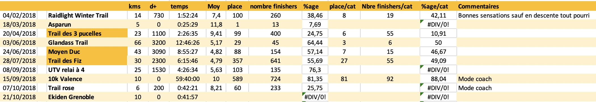
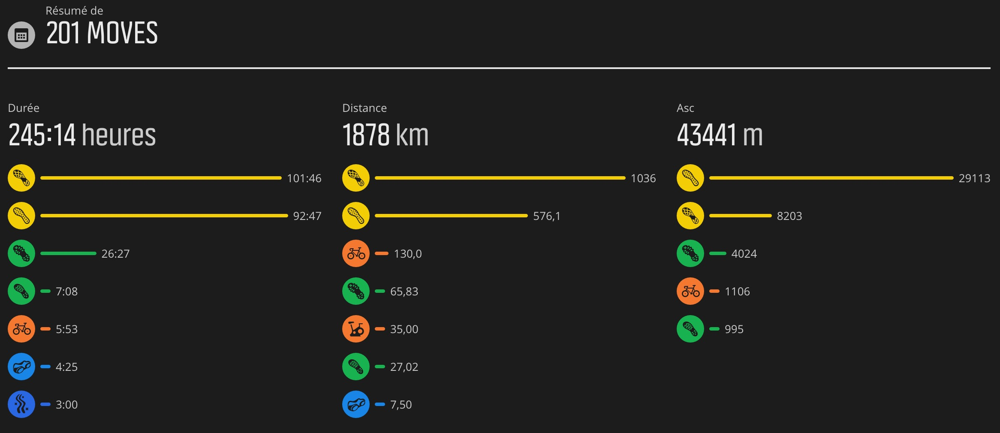
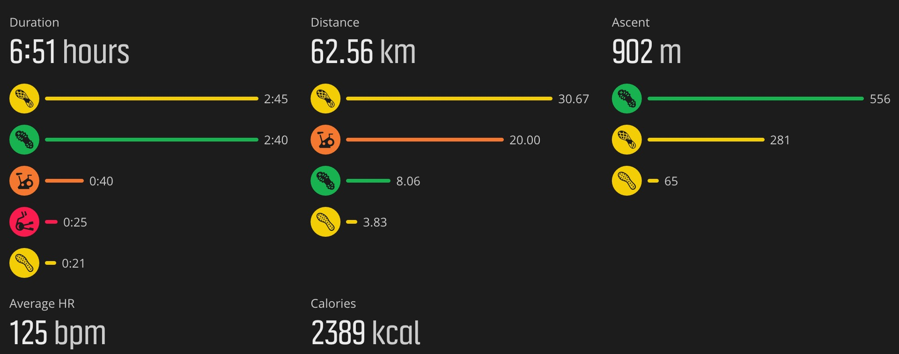
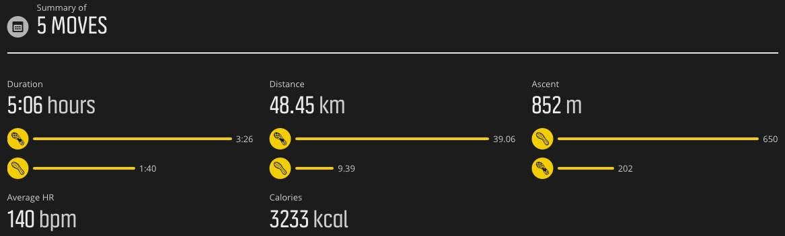
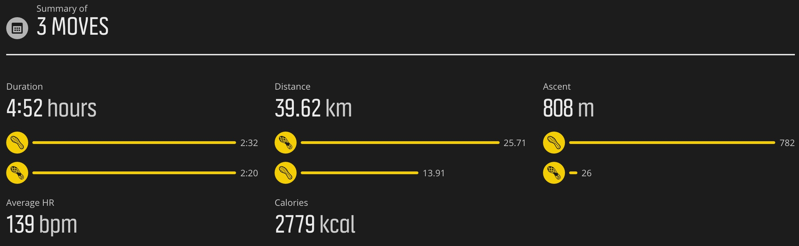

Bilan 2018
Les courses

Bilan mitigé. Très bonne progression en vitesse (2' de moins sur le 10k de l'Ekiden cette année) mais sur les plus longues
distances, les perfs sont moyennes avec quasiment des explosions à chaque fois malgré une gestion de l'allure. La plus positive les 3
pucelles avec une belle place quand meme et des très bonnes sensations au final.
Les entrainements

Des chiffres inférieurs à l'an passé mais plus de qualité.
Semaine 24/12/18 au 30/12/18
- Lundi 24/12
- Mardi 24/12
- (CAP) 40' footing tranquille, 7k
- Mercredi 25/10
- Jeudi 26/10
- (CAP) 4k/20' échauffement pour PPG
- (PPG) 25'
- Vendredi 27/10
- (CAP) 43'/7.3k dont 6x1'30 en côte (récup en descente)
- Samedi 28/10
- Dimanche 29/10
- (Rando) 8k avec 600 d+
- (CAP) 1h23'/16,4k bonne allure le long de l'Isère
Bonnes sensations cette semaine. Retour aux affaires pendant les congés.

Prévisions 2019
- Raidlight Winter Trail 2019 - 03/02/18 - 15k/600 d+ - INSCRIT
- Chemins de Chatu - 31/03/18 - 15k/300 d+ - INSCRIT
- Trail des 3 pucelles 2019 - 28/04/18 - 23k/1100 d+ - INSCRIT
- Glandass trail 2019 - 02/06/19 - 66 k - INSCRIT
- Trail des Fiz - 28/07/19 - 30k 2300 d+
- Ultra Trail du Vercors - 07/09/19 - 85k ???? d+ ?
- Templiers ?
Semaine 31/12/18 au 06/01/19
- Lundi 31/01
- Mardi 01/01
- Mercredi 02/01
- (CAP) 51'/10k endurance
- (CAP) 30'/5,3k coolos
- Jeudi 03/01
- (CAP) séance trail, 1h40'/9,4k, 654 d+
- Vendredi 04/01
- (CAP) AS Fontaine, 51'/9,4k, 10x30/30 et 10x30/20. Très bonnes sensations malgré le froid.
- Samedi 05/01
- (CAP) 15k/1h18, endurance. Bonnes sensations.
- Dimanche 06/01

Semaine 07/01/19 au 13/05/18
- Lundi 07/01
- Mardi 08/01
- (CAP) 2h32'/14k trail blanc à Aussois, 780m d+ et pas mal de neige par endroits. Bonnes sensations
- Mercredi 09/01
- Jeudi 10/01
- Vendredi 11/01
- (CAP) AS Fontaine 1h01'/11k, 2x5x2'/40" (3')
- Samedi 12/01
- Dimanche 13/01
- (CAP) 1h18'/14.7k Sensations bof
Semaine pas délire encore à cause du boulot mais 3 belles séances qd même. Le fractionné de vendredi s'est super bien
passé. Bonnes sensations sur les 10 répets (peut être pas assez rapide car tt seul pour la séance et pas de repère).

Semaine 14/01/19 au 20/01/19
- Lundi 14/01
- Mardi 15/01
- Mercredi 16/01
- Jeudi 17/01
- Vendredi 18/01
- (CAP) AS Fontaine 48'/9,4k, 2x10x30/30
- Samedi 19/01
- Dimanche 20/01
- (CAP) Sortie trail Barakafrites 1h07/9,2k, 450 d+
- (CAP) 54'/10k
Semaine 'boulot'. 3 sénces de sauvées.
Bilan: (CAP) 28,6k.
Semaine 21/01/19 au 27/05/19
- Lundi 21/01
- Mardi 22/01
- Mercredi 23/01
- (Vélo) 21' Home-trainer, 10k
- (PPG) 23'
- Jeudi 24/01
- Vendredi 25/01
- Samedi 26/01
- Dimanche 27/01
- (CAP) 3h08'/12k, neige et 722 d+
Petite semaine encore.
Bilan: (CAP) 12k, (vélo) 10k, (PPG) 23'
Semaine 28/01/19 au 03/02/19
- Lundi 28/01
- Mardi 29/01
- Mercredi 30/01
- Jeudi 31/01
- (CAP) 51'21"/10k endurance
- Vendredi 01/02
- Samedi 02/02
- Dimanche 03/02
Petite semaine encore.
Bilan: (CAP) 16,4k
Semaine 04/02/19 au 10/02/19
- Lundi 04/02
- Mardi 05/02
- Mercredi 06/02
- (CAP) 1h10'/12k tranquille
- Jeudi 07/02
- Vendredi 08/02
- Samedi 09/02
- Dimanche 10/02
Semaine pourrie pour changer.
Bilan: (CAP) 12k
Semaine 11/02/19 au 17/02/19
- Lundi 11/02
- (CAP) 24'49/5,2k sous la pluie mais cool.
- Mardi 12/02
- (Nat) 45'/1000m
- (CAP) 57'22/9k AS Fontaine, Fartlek
- Mercredi 13/02
- Jeudi 14/02
- (CAP) 51'38/10k endurance
- Vendredi 15/02
- (CAP) Piste AS Fontaine. 2x10x40/20 1h/10k
- Samedi 16/02
- Dimanche 17/02
Semaine un peu plus sérieuse. Ca fait du bien.
Bilan: (CAP) 37,2k, (Nat) 1000m.
Semaine 18/02/19 au 24/02/19
- Lundi 18/02
- Mardi 19/02
- Mercredi 20/02
- (CAP) 1h/10,5k Côtes sur route au Sappey
- Jeudi 21/02
- Vendredi 22/02
- (CAP) Fract. sur les quais 2x5x2’30/45 (3’) 1h03'/12,2k
- Samedi 23/02
- (CAP) 40'25/7,9k Endurance
- Dimanche 24/02
- (CAP) 1h19'/15k endurance
Une belle semaine enfin.
Bilan: (CAP) 51,7k
Semaine 25/02/19 au 03/03/19
- Lundi 25/02
- Mardi 26/02
- (CAP) 46'42/9,3k endurance.
- Mercredi 27/02
- (Vélo) 1h13'28"/30,7k retour au vélo dehors. 300 d+
- Jeudi 28/02
- Vendredi 01/03
- Samedi 02/03
- (Nat) 1700m/1h
- (CAP) 57'55/10k, côtes au Sappey
- Dimanche 03/03
- (CAP) 1h11'49"/15k, endurance++. Bonne allure et bonnes sensations.
Encore une semaine pas mal.
Bilan: (CAP) 34,3k, (Vélo;) 30,7k, (Nat) 1700m.
Semaine 04/03/19 au 10/03/19
- Lundi 04/03
- Mardi 05/03
- (CAP) 1h07/11.4k, 370 d+. Côte Narbonne. Dure mais bon.
- Mercredi 06/03
- (CAP) 33'40"/5,5k. Holliday on ice sur les pistes de ski de fond du Sappey.
- (CAP) 1h47'/15,8k, 496 d+. Dans les Vouillans. Jolie sortie trail.
- Jeudi 07/03
- Vendredi 08/03
- Samedi 09/03
- (CAP) 1h/10,6k, 278 d+. Fractionné en côtes dans le Sappey (dont 10x40" en montée, récup en descente).
- Dimanche 10/03
- (CAP) 18k/1h26'. Footing 'long' à plat le long de l'Isère. Bonne allure (4'46/kilo) facile.
Bilan: (CAP) 61,3k en 5 séances, 1144 d+. Bonnes sensations en général (à part le coup de barre de jeudi).
Semaine 11/03/19 au 17/03/19
- Lundi 07/03
- Mardi 08/03
- (CAP) 34'21/6,5k, footing à jeun à Paris (Jardins du Luxembourg).
- (CAP) 52'39/9k, 142 d+. Fartlek AS Fontaine.
- Mercredi 09/03
- (CAP) 52'/8,6k, footing dans neige fraiche (et sous la neige) au Sappey. Le pied.
- Jeudi 10/03
- Vendredi 11/03
- (CAP) 1h21'/14,2k, endurance tranquille.
- Samedi 12/03
- (CAP) 3k, footing d'avant course tranquille.
- Dimanche 13/03
- (CAP) 2h55'46/27,3, 1190 d+. Sacré trail de Tullins. 33/116 et 2e V2/14. Bonnes sensations sauf en cotes (pas terrible) mais pas mal en
descente (je sais ce qu'il faut travailler).
Bilan: (CAP) 68,6k. 6h54' d'entrainement. Cool finalement malgré les 3 jours à Paris et bonnes sensations sur le trail
malgré la fatigue générale.
Last modified: Sun Mar 17 20:32:09 CET 2019